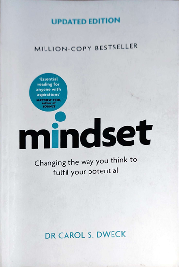

Book Analysis: Mindset by Dr Carol Dweck

About Author:
Carol Dweck is highly esteemed as a prominent figure in the areas of personality, social psychology, and developmental psychology. Her academic work, Self-Theories: Their Role in Motivation, Personality, and Development, was honored as the Book of the Year by the World Education Fellowship.
Carol Dweck is recognized globally as a top researcher in personality, social psychology, and developmental psychology. Her scholarly publication, Self-Theories: Their Role in Motivation, Personality, and Development, was awarded the prestigious title of Book of the Year by the World Education Fellowship.
About Book:
This book comes highly recommended for educators, mentors, guardians, and learners. The content is presented in a question-and-answer format, supplemented with numerous illustrations and real-world situations. The author delves into various aspects of mindset, such as effort, results, despondency, success, creative talent, harassment, fury, and more.
This publication is a valuable resource for those involved in education and personal development. It offers a comprehensive exploration of different mindsets, providing insights and practical examples that can be applied in various contexts. Whether you are a teacher, coach, parent, or student, this book is a must-read for gaining a deeper understanding of mindset and its impact on personal and academic growth.
Fixed mindset:
- Individuals possess a set level of ability that is considered to be unchangeable. However, individuals tend to maintain a fixed mindset for a specific reason. This mindset may have once served a beneficial purpose in their lives.
- The CEO disease is characterized by the desire to be perceived as flawless and to rule from a position of superiority. This condition is often associated with the need to maintain an image of perfection while leading an organization.
- The focus here is solely on the end result. Any failure or lack of excellence is considered a complete waste.
Growth mindset:
- This growth mindset is based on the belief that your basic qualities are things you can cultivate through your efforts, your strategies, and help from others.
- Individuals with a growth mindset actively pursue challenges and are invigorated by them. They view challenges as opportunities for growth and development, and the more daunting the challenge, the more they are motivated to push themselves beyond their limits.
- The growth mindset allows people to value what they’re doing regardless of the outcome.
- People with this mindset didn’t even think they were failing. They thought they were learning.
Personal Stories:
Actor Christopher Reeve after thrown from a horse broke his neck and his spinal cord was severed from his brain. He was completely paralyzed below the neck. Medical science said, So sorry. Come to terms with it.
Reeve expressed a desire to be more active and requested a workout regimen that required movement in all areas of his body, despite being paralyzed, using electronic stimulation. Medical professionals cautioned him that he may be in denial and could be setting himself up for disappointment. However, five years later, Reeve began to experience some improvement in his mobility. It was clear that he was not completely healed, but his progress opened up new possibilities for research and provided a newfound sense of optimism for individuals with spinal cord injuries.
Jack Welch, the former CEO of General Electric, was known for his emphasis on listening, giving credit, and fostering growth within the company. When he assumed leadership of GE in 1980, the company's value was $14 billion. By the time he stepped down twenty years later, Wall Street had valued GE at an impressive $490 billion. Welch's leadership style and strategic decisions played a significant role in the company's remarkable growth during his tenure.
Stories of athletes like Michael Jordan, Muhammad Ali, Tiger Woods. Wilma Rudolph is similar. They all are genius who constantly wants to upgrade their genius.
Some individuals also have a fixed mindset, as evidenced by various stories.
Iacocca: I’m a Hero.
Albert Dunlap: I’m a superstar.
Leaders with a fixed mindset often used tags or labels to showcase their abilities, refusing to acknowledge any form of criticism or change. This behavior not only hindered their personal growth and success but also had devastating consequences for the lives of those around them.
Dangers of being labeled positively or negatively
Assigning labels can have detrimental effects on individuals. For instance, if a child achieves a perfect score and is showered with praise such as "You are naturally gifted and you earned it," it can diminish their motivation to excel and cause the child to rely on innate abilities rather than hard work. This can result in the child placing too much trust in the opinions of others.
Labeling individuals based on their achievements or qualities can have negative consequences, as it may lead to a fixed mindset and reliance on external validation. Instead of focusing on effort and growth, individuals may become overly dependent on the perceptions of others, hindering their personal development and resilience. Therefore, it is important to encourage a growth mindset and emphasize the value of perseverance and dedication.
Praise should deal, not with the people’s personality attributes, but with their efforts and achievements.
Some definitions:
Success: It is doing their best, in learning and improving.
Failure: Failure can be a motivating force, providing valuable information and serving as a wake-up call.
Constructive criticism aims to help individuals improve, fix issues, and produce better results.
Cognitive Therapy: Cognitive therapy focuses on teaching individuals to control their extreme judgments and make them more rational.
Children pass on the messages:
Even young children are ready to pass on the wisdom they’ve learned. During a research study, a group of second-grade children were posed with the question: "If a classmate of yours was struggling with Math, what guidance would you offer them?".
The following guidance comes from a child who possesses a growth mindset:
Do you quit a lot? Do you think for a minute and then stop? If you do, you should think for a long time, two minutes maybe and if you can’t get it, you should read the problem again. If you can’t get it then, you should raise your hand and ask the teacher.
Isn’t that the greatest? The advice from children with fixed mindset was not nearly as useful. Since there’s no recipe for success in the fixed mindset, their advice tended to be short and sweet. “I’m sorry” was the advice of one child as he offered his condolences.
Journey to growth mindset:
We all possess a combination of both a growth mindset and a fixed mindset, but it is possible to enhance the presence of a growth mindset once we acknowledge our current state. The author recommends four steps to progress in this direction, and provides examples to illustrate each step.
Each of us contains elements of both a growth mindset and a fixed mindset, but by recognizing our circumstances, we can elevate the influence of a growth mindset. The author proposes four steps to advance in this manner, and offers examples to clarify each step.
- Embrace your fixed mindset.
- Become aware of your fixed-mindset triggers.
- Now give your fixed-mindset persona a name.
- Educate it. Take it on the journey with you.
Amazing Quotes:
- The view you adopt for yourself profoundly affects the way you lead your life.
- When you’re lying on your deathbed, one of the cool things to say is, ‘I really explored myself’.
- Effort is what ignites that ability and turns it into accomplishment.
- Personal success is when you work your hardest to become your best.
- Unfortunately, people often like the things that work against their growth.
- Speed and perfection are the enemy of difficult learning.